来源：https://nivut760ftk.feishu.cn/docx/LB8Vdy0rSoq4HTx26TucYnEJnOh
大家好，我叫艾小飞，专做小红书流量
对于小红书人设定位，很多做小红书的朋友都很模糊，什么是人设定位？这跟我做小红书号有啥关系？？？
但我想跟你说，如果你看完这篇文章，流量能暴涨200%，你会好奇是什么原理吗？
这些，初看没价值，看完后思路通了，也许某天就能再多赚个几万块钱，信吗
这些，所有你想知道的答案，都隐藏在了这篇文章里，今天我继续来给你们分享《小红书人设定位，咋就那么难？》的文章，说说我的经历和想法
因为小红书人设的定位会关联到流量和转化率
可能现在很多做小红书的朋友，发笔记都是随心发的，同行发什么，我也跟着发什么，流量是有了，转化率却很低
这是为什么？
其实就是因为没有意识到人设的重要性
你以为人设不重要，你仔细去逛逛小红书后，其实每一个爆款的背后，都有一个立体的人设，不信你去看
简单一句话就是：人设是有性格的身份
其实每个人在社会上都有不同的性格和身份的
比如：
这些都是有血有肉有温度的人，也是有性格和身份的人设
其实做账号也是一样的，也是需要有性格和身份的，这样用户通过浏览你的文字或图片，能感受得到这账号的背后是个什么样的人
如果你是用户，你愿意看一个机器式无情感的笔记，还是愿意看一个有温度有情绪的笔记？
这不用猜，肯定选第二种对吧
对的，小红书用户也是这么想的
我举个例子
上个月我做小红书残蟹项目的时候，我开始找自己账号的人设定位
我观察到很多同行都是发类似这种笔记
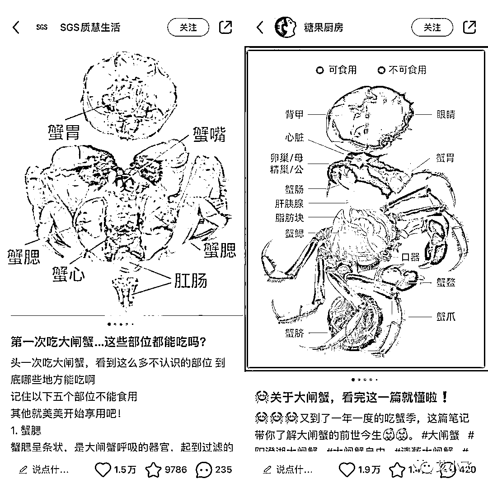
点赞收藏都很高，但转化率很低
给我感觉他们就像是“有用的工具人”，用户想起就翻，用完就甩
为了提升转化率，我打算重新开始找人设身份
我借用了同行都在用的“商家”人设，加上他们没有的“女儿”身份
因为我人在广西，别人一看ip就知道我是假的苏州大闸蟹商家，于是加上在外地上学的“大学生”身份一起相结合
得到了一个以“在校大学生商家女儿”的人设，跟同行错位竞争，想快速去获得订单
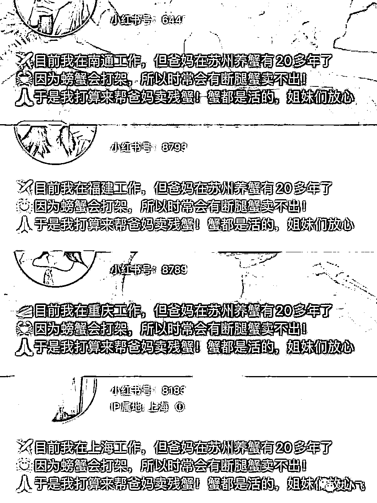
并且在笔记内容上，我提供了实用价值，情绪价值，还解决了他们想吃却怕贵的需求
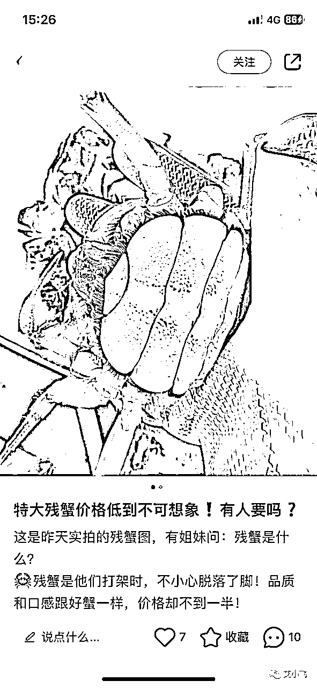
利用了占便宜和好奇心的心理，迅速把同行的客户都吸引到我这边围观
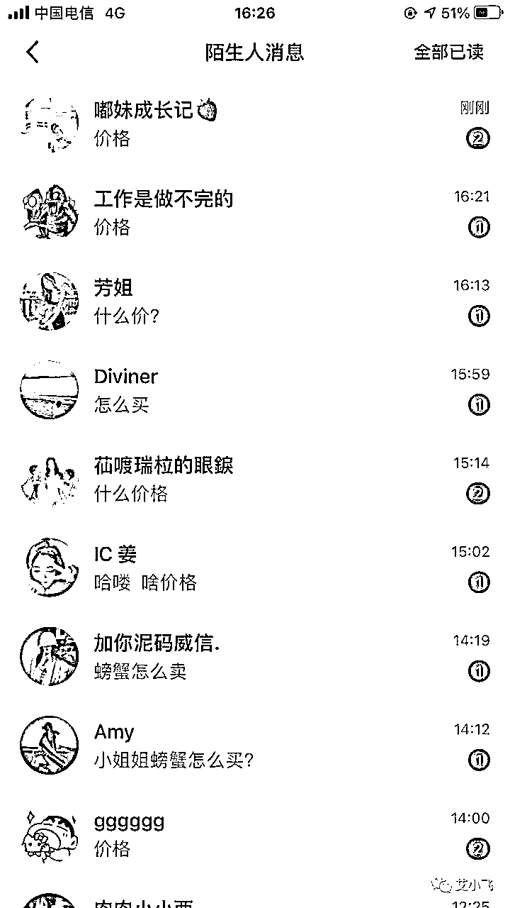
来咨询的用户，基本都是问：“怎么买”，“多少钱”，“在哪买”等
只要是他能接受这个价格，立马就问“怎么付款”了，转化率非常的高，新号第二天就开了第一单
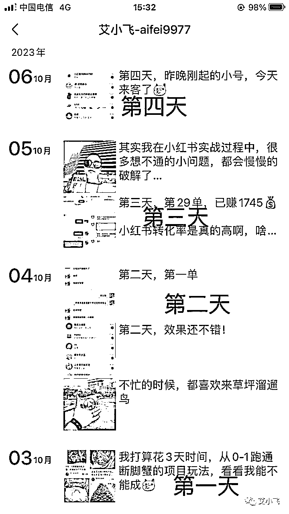
回到刚刚的提问，为什么好人设能影响转化率？
其实现在很多玩小红书的年轻人，对普通的“十年养蟹人，质量有保证”的这种人设已经审美疲劳了
你现在去搜养蟹的账号，十个里有七八个都是这么说的，谁知道他们是不是真的啊
那我现在用了另一种角度，重新的定位了新的身份，让人觉得眼前一亮的感觉
而且还在文案中给了实用价值+情绪价值+下单意识，这就是我做项目跟别人的区别，也是提前打造好人设能给我带来高转化率的原因
我也推荐你们去试试这种模式，能快速的提高产品的转化率
在这我想问问你，如果你想在小红书上卖珠宝翡翠，你会以什么样的人设，来做这个小红书账号，给自己大脑思考5秒时间
可能你也有了答案，不过你猜我会怎么做？
如果是我的话，我肯定不会以一个“路人”或“用户”的视角来分享翡翠的干货知识
“路人”“用户”和“干货知识”来做账号，只会让你的账号转化低，变得没价值
如果是我来打造人设，将会以一个自有翡翠加工厂老板女儿的人设身份，去发布些产品有微瑕但很低价的账号类型
我先说下我的思考点，为什么会这样设计
凡是稍微观察下整个小红书做翡翠的，基本上每个商家都在强调自己的货很“精”，很“贵”，很“值”
如果这时候我去跟他们拼，肯定拼不过，不如换个思路去竞争
现在整个市场都消费降级，拼多多的市值都超淘宝了，如果这时候再去强调多“贵”，显然是走不远的
不如就来个消费降低的打法，别人强调有多“贵”，我就强调有多“性价比”
虽然有微瑕，但整体不影响美观，价格却是比精品的低一大半，很多人为了不想错过“捡漏”的产品，会跃跃欲试的来问你价格
如果报的价格合适，他们会立马下单，毫不犹豫的那种！
这就是我帮朋友打造一个翡翠人设账号的成功思路，说到这还挺有成就感的哈哈
现在他靠免费流量，每天引流80人+，日营业额有5w~8w，利润每天5000多，这已经是比很久都不开单的商家，强多了
这就是我去打造一个值钱人设账号的思路，你们可以举一反三的照抄和参考下
我觉得这是两个相互矛盾的问题吧
还是以我自身的经历来举例
前几天，我的一条产品引流笔记，爆了！
记住，这条是引流贴！不是什么娱乐贴！
我无心发的，第二天一早跑到了7万的播放量，当时我心想，哇这波发财了啊，这么多流量，又是引流贴，这下可以过个肥年了吧
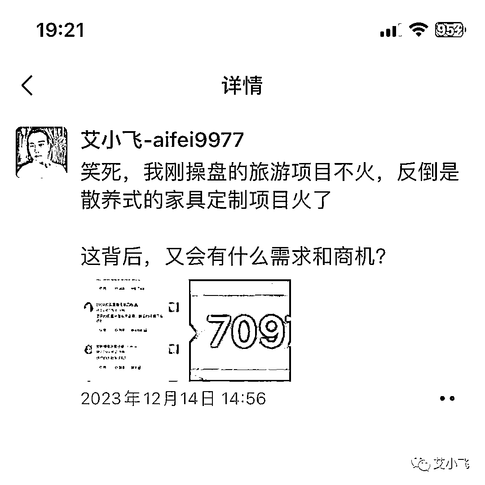
第二天晚上，跑到了68万！我都惊了！
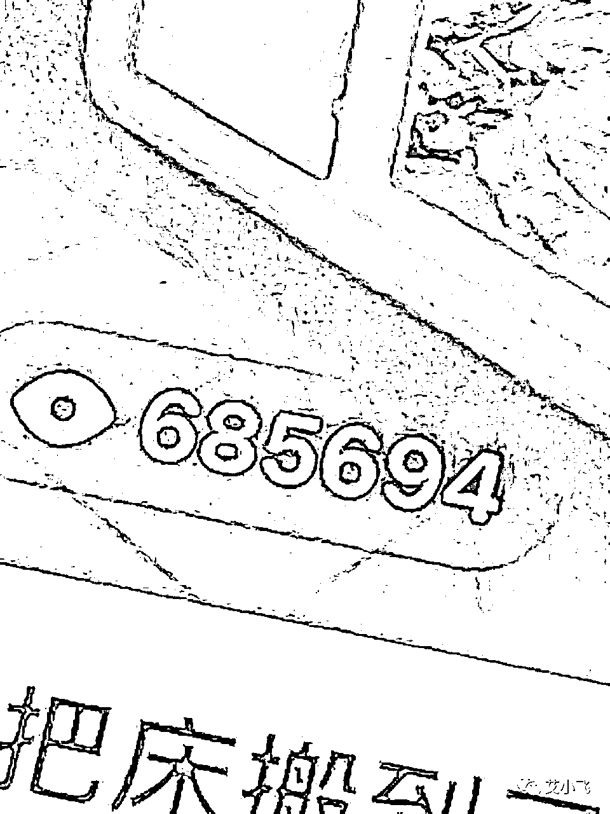
以前娱乐贴我跑过百万播放的，但唯独引流贴我是没跑到过这个数的
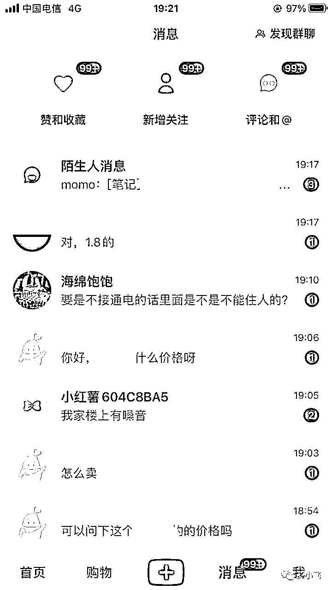
几天前，这就是我的真实感受
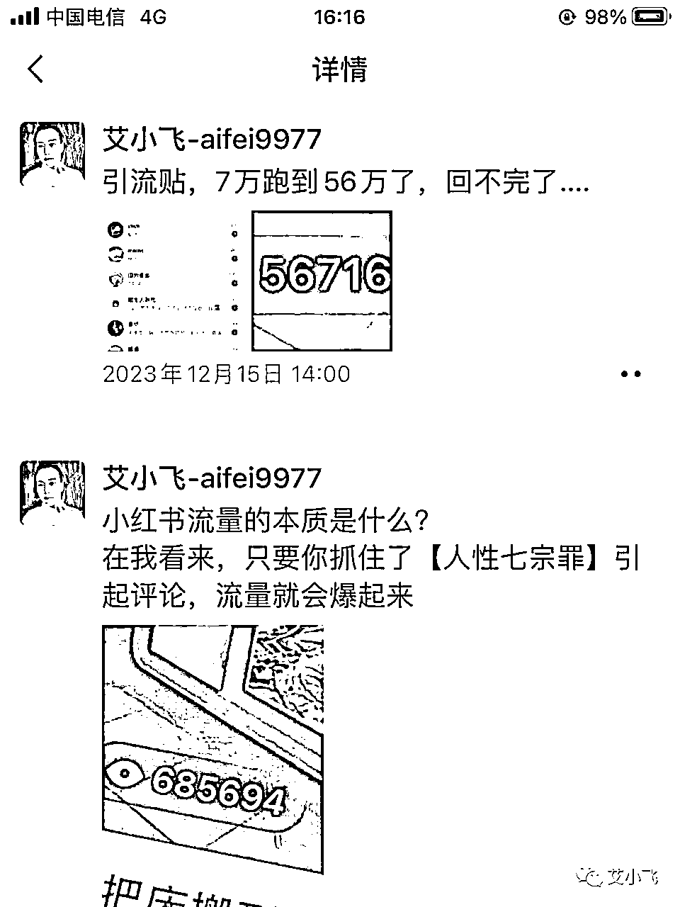
你们猜，这68万播放量，2天1000多人的私信，我引流了多少人？成交了多少单？
哈哈说出来好丢脸的，还是不说了不说了哈哈
结果其实并没有大家想的那么好，要想流量高，转化率也高，还不被封号，基本是很难的，真的很难！
因为我测试的产品是家居定制类的，客单价2w左右，客单高利润也高，很多人在评论区留言多少钱，怎么买，然后他们一个个的@好朋友快来看这神奇的东西
也因这个产品新，痛点深，价格不透明，标题很奇葩，封面又有联想的意境，所以一下子就从1000多的播放量，2天飙到了68万
我明知道这是引流贴，平台也知道我是来引流的，所以我这个账号成了“重点观察对象”，同行在盯着我，平台也在盯着我，要是发现我有什么违规的操作，立马就处罚
因为在小红书上引流要是被抓到了，轻的限流，严重的直接永久封号！
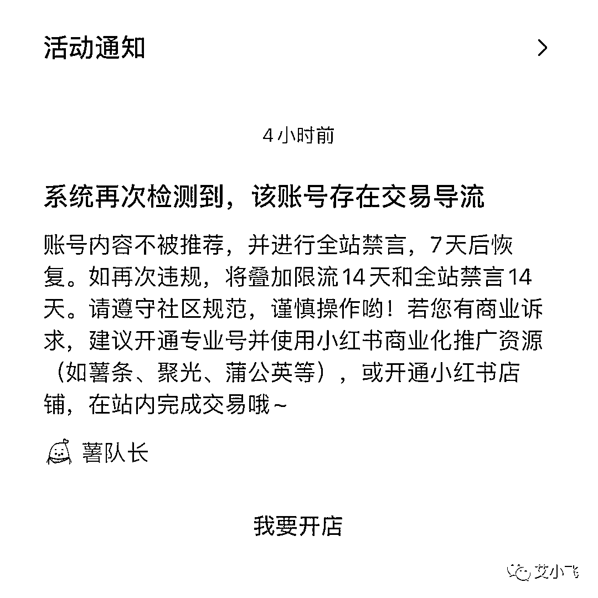
当时很多人都来找我问价，但这时候我却怕了，却不敢引流了
当时流量很猛，我面临了两种选择：
要么引流，号永久封，赚点钱收工
要么不引流，号可保住，留在青山在，不怕没柴烧
这是二选一的难题，如果你是我，你会怎么选
所以一个账号，要想同时保证爆款还能有高转化率，还不被封号，基本上是很难的，除非你投流！
如果要想提升转化率，就不要去发干货类型的笔记，直接以自身的人设出发，去发能吸引用户主动询单的内容
说到这里，我再给你们举个例子
我想起昨天有个粉丝来找我咨询，他是做哈尔滨旅游的，想吸引客户买他的旅游团路线，价格也不贵，但转化率就是很低，来问我怎么解决
我看了他的笔记，人设身份是商家，但发的都是干货类型的笔记，比如像这种
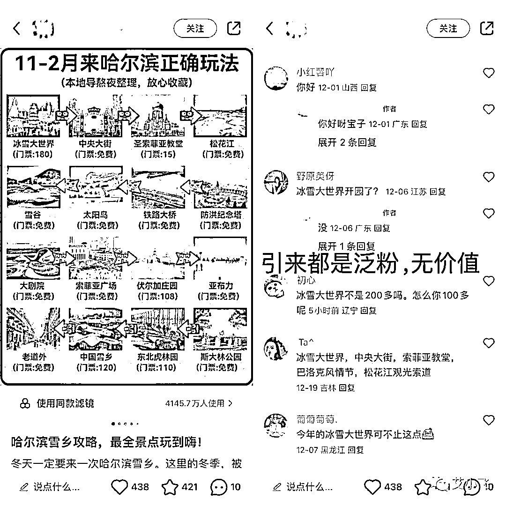
人设是没问题的，但用错了地方
我教他换一个标题，换张封面，第二天订单量马上上来了
他是用了什么方法呢？
由类似原来的《哈尔滨雪乡攻略，最全景点玩到嗨》标题，改成类似《哈尔滨+长白+延吉玩6天！人均才3K，实话！》
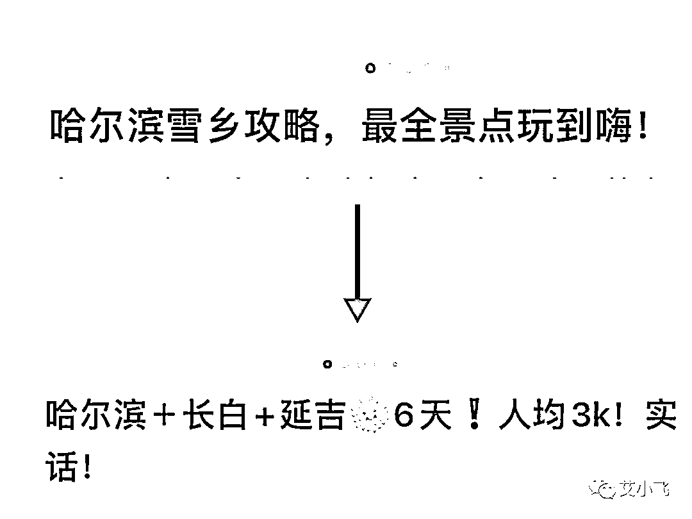
封面在换成这样
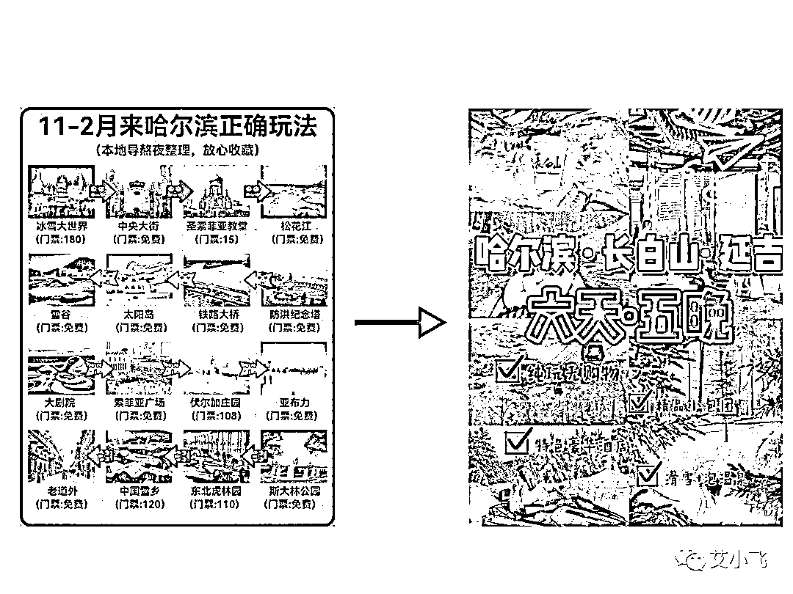
给你们看看，这两种前后的区别在哪
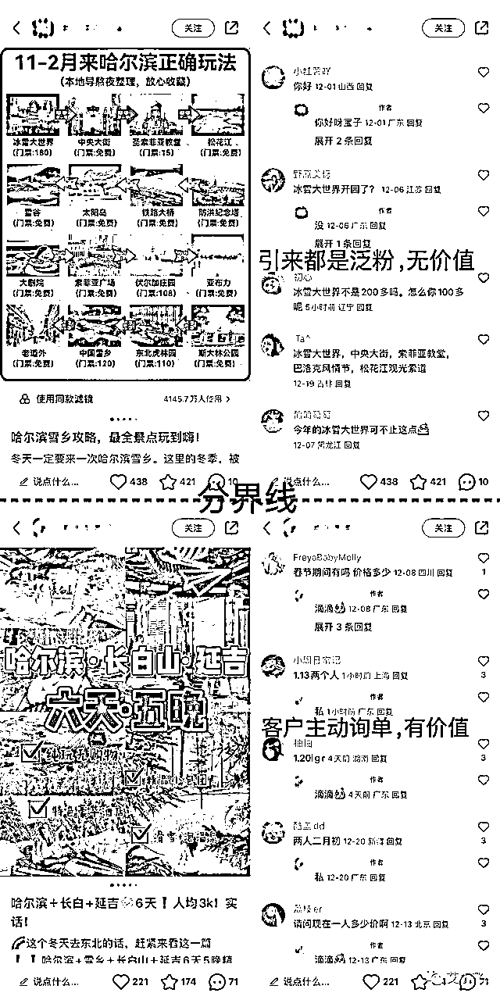
所以再次建议，做任何产品，要想转化率高，不要去发干货知识类的内容，那些很难变现的，对你账号都没什么实际价值
如果要想转化率高，建议根据用户的痛点，直接发产品的需求，最好是利用【人性七宗罪】的原理，把吸引度给拉满，特别是人性的“贪婪”
刚我说了，干货类型的笔记，内容都是干巴巴没有情感的，你发的像机器式答案，用户也只会把你当做是“有用的知识”去收藏，并没有潜意识的知道：“哦，原来你这也有跟团路线啊”
你不把自己目的说出来，谁会懂？
难道让客户去猜你背后的动机是什么吗？对吧
要想转化率高，只有从现在开始改账号人设，换笔记类型，你的订单和客户就不会被同行给抢走了，毕竟这年头，赚钱真的难
但如果你把账号人设打造好了，流量或客户是不缺的，真的
其实打造人设是不难的，难的是如何在搬运素材的情况下，还能做到爆款，还能做到引流99+
这个是有技巧的
就像我那篇家居定制的爆款笔记那样，图片是别人的，标题是别人的，甚至文案都是别人的！！（哈哈想不到吧）
我是如何神奇操作起来的？
我是如何做搬运还不被封号的？
我是如何靠搬运能持续爆款的？
这里面有什么不为人知的小技巧？
别急！
下集，更精彩！
我叫艾小飞，专做小红书流量。谢谢你的阅读和点赞！
如有小红书上的疑问，可留言或后台找我沟通
点赞越多，更新越快，下期见！
原创：艾小飞
转载可私信
禁止搬运和抄袭
往期高赞好文
原创：艾小飞
转载可私信
禁止搬运和抄袭
微信：aifei9977（记得备注来意）